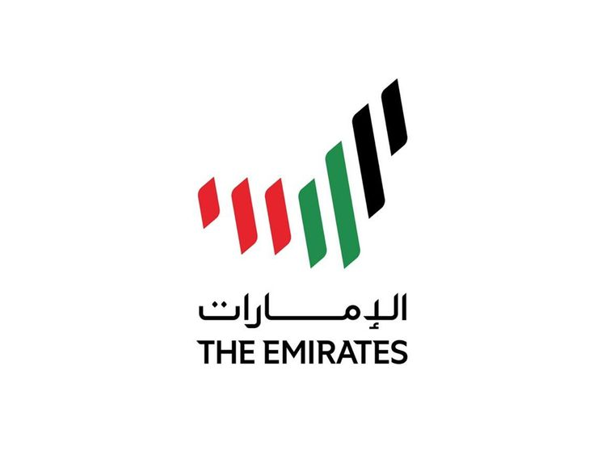

Klik hier om naar de site van Fly Emirates te gaan. Emirates is een luchtvaartmaatschappij uit Dubai in de Verenigde Arabische Emiraten. De maatschappij werd in mei 1985 opgericht door de regering van de Verenigde Arabische Emiraten.
Emirates heeft een zeer snelle groei laten zien. De maatschappij heeft vluchten naar vele bestemmingen in het Midden-Oosten, Azië, Europa, Afrika, Oceanië en Noord-Amerika. Op 25 oktober 1985 werden de eerste vluchten naar India en Pakistan uitgevoerd. Tussen 1987 en 1990 kwamen ook Azië en Europa op de routekaart. Emirates werd op 1 april 1998 aandeelhouder van SriLankan Airlines. De vrachtdivisie van Emirates heet Emirates SkyCargo.
hier om naar de site van Fly Emirates te gaan. Emirates is een luchtvaartmaatschappij uit Dubai in de Verenigde Arabische Emiraten. De maatschappij werd in mei 1985 opgericht door de regering van de Verenigde Arabische Emiraten.
Emirates heeft een zeer snelle groei laten zien. De maatschappij heeft vluchten naar vele bestemmingen in het Midden-Oosten, Azië, Europa, Afrika, Oceanië en Noord-Amerika. Op 25 oktober 1985 werden de eerste vluchten naar India en Pakistan uitgevoerd. Tussen 1987 en 1990 kwamen ook Azië en Europa op de routekaart. Emirates werd op 1 april 1998 aandeelhouder van SriLankan Airlines. De vrachtdivisie van Emirates heet Emirates SkyCargo.
 Halverwege de jaren tachtig begon Gulf Air haar diensten naar Dubai te verminderen. Als gevolg hiervan werd Emirates in maart 1985 opgericht met de steun van de koninklijke familie van Dubai, waarbij Pakistan International Airlines twee van de eerste vliegtuigen van de luchtvaartmaatschappij op wet-leasebasis leverde. Met $ 10 miljoen aan startkapitaal moest het onafhankelijk van overheidssubsidie opereren. Pakistan International Airlines bood trainingsfaciliteiten aan het cabinepersoneel van Emirates op de academie. De luchtvaartmaatschappij stond onder leiding van Ahmed bin Saeed Al Maktoum, de huidige voorzitter van de luchtvaartmaatschappij. In de jaren na de oprichting breidde de luchtvaartmaatschappij zowel haar vloot als haar bestemmingen uit. In oktober 2008 heeft Emirates alle activiteiten op Dubai International Airport naar Terminal 3 verplaatst. Emirates exploiteert een gemengde vloot van Airbus- en Boeing-wide-body-vliegtuigen en is een van de weinige luchtvaartmaatschappijen die een all-wide-body-vliegtuigvloot heeft (exclusief Emirates Executive). Sinds februari 2019 is Emirates de grootste Airbus A380-operator met 115 vliegtuigen in dienst en nog eens 8 in bestelling. Sinds de introductie is de Airbus A380 een integraal onderdeel van de Emirates-vloot geworden, vooral op langeafstandsroutes met een hoge dichtheid. Emirates is ook 's werelds grootste Boeing 777-operator met 155 vliegtuigen in dienst. De bedrijfsslogans omvatten Fly Emirates, Be good to yourself, From Dubai to bestemmingen over de hele wereld, Keep Discovering, Hello Tomorrow, en is momenteel Fly Emirates, Fly Better.